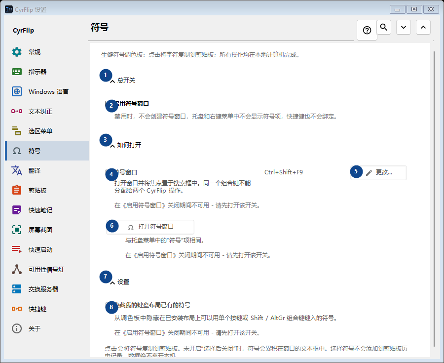
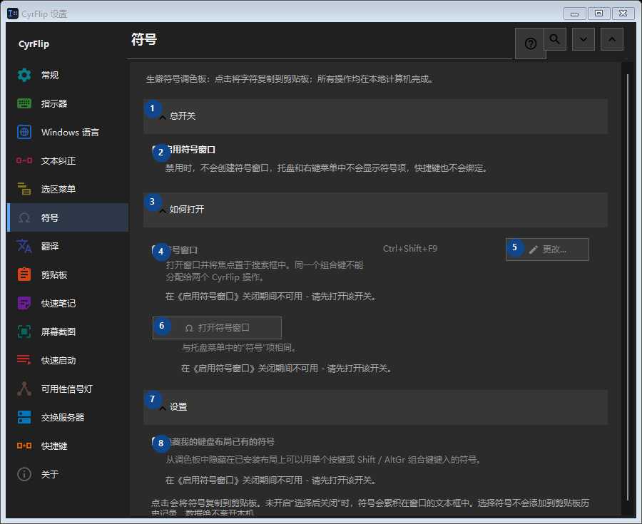

符号
用途
生僻符号调色板：点击将字符复制到剪贴板；所有操作均在本地计算机完成。


使用顺序
设置立即生效，无须按固定顺序操作；请使用以下分组。
界面元素
1. 总开关
需要执行上述操作时使用此命令。接受前请阅读确认提示。
你的快捷键2. 启用符号窗口
禁用时，不会创建符号窗口，托盘和右键菜单中不会显示符号项，快捷键也不会绑定。
你的快捷键3. 如何打开
需要执行上述操作时使用此命令。接受前请阅读确认提示。
你的快捷键4. 符号窗口
在《启用符号窗口》关闭期间不可用 - 请先打开该开关。 此控件当前不可用。请先启用相应功能或选择条目。
你的快捷键5. 更改 - 符号窗口
在《启用符号窗口》关闭期间不可用 - 请先打开该开关。 此控件当前不可用。请先启用相应功能或选择条目。
你的快捷键6. 打开符号窗口
在《启用符号窗口》关闭期间不可用 - 请先打开该开关。 此控件当前不可用。请先启用相应功能或选择条目。
你的快捷键7. 设置
需要执行上述操作时使用此命令。接受前请阅读确认提示。
你的快捷键8. 隐藏我的键盘布局已有的符号
在《启用符号窗口》关闭期间不可用 - 请先打开该开关。 此控件当前不可用。请先启用相应功能或选择条目。
你的快捷键